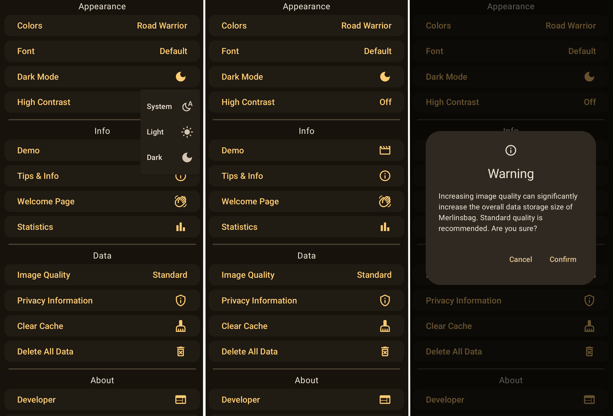
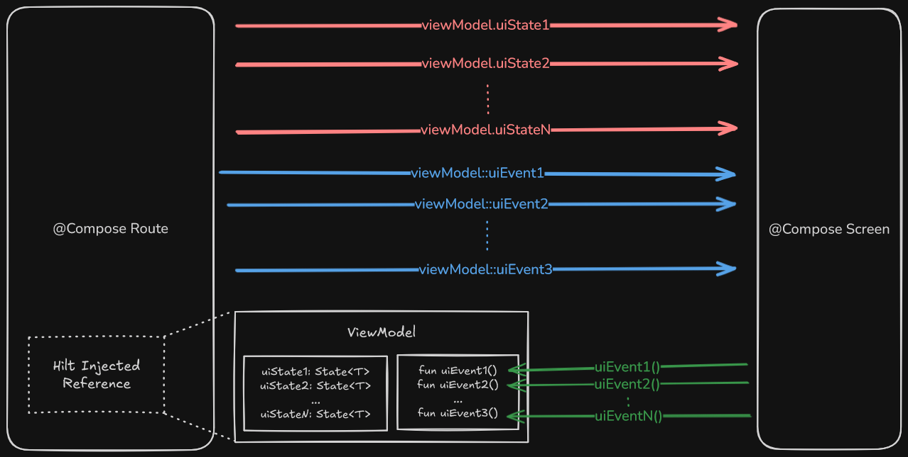
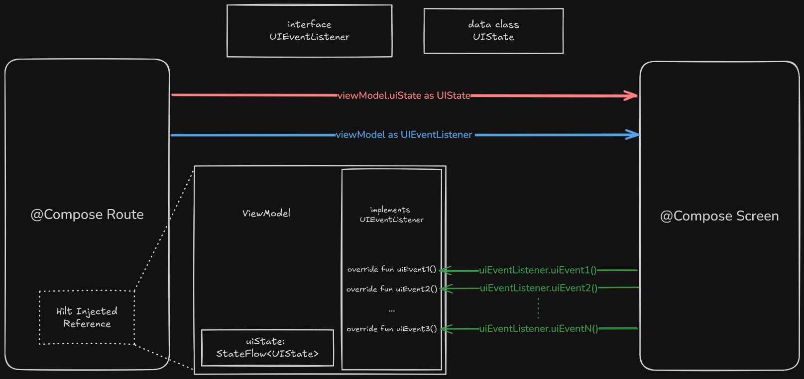
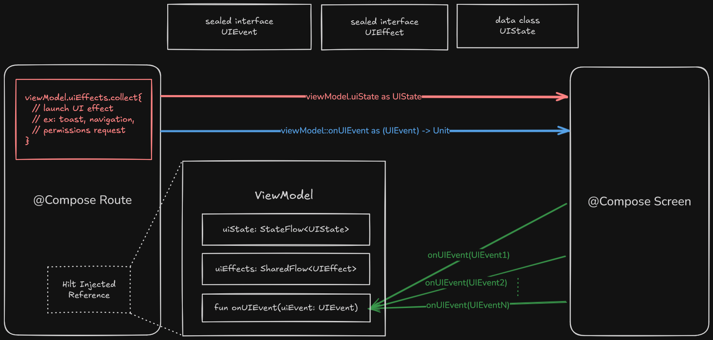

So I have had a little problem with my open-source Android project, Merlinsbag. The core of this problem is the communication between Compose UI and an Android Architectural Component (AAC) ViewModel. Up until now, any well-structured architecture on this front had been ignored. You can get far by simply providing UI state & UI events reporting via viewmodel member variables and methods. However, in Merlinsbag, this simple approach has grown a bit cumbersome in ways I hope to describe.
This article is about a refactoring journey to find an architecture suitable for my project’s needs. It is not about revealing the one true architecture to rule them all. It is an article I wish I had for my past self and that I hope is valuable to my future self.
In this article, "viewmodel" is not used as a loaded term in support of MVVM. It is a term I use for the portion of code that manages UI state. In Merlinsbag, this is handled via AAC ViewModels.
The example code snippets in this post are painfully explicit. In some sense, it feels impossible to demonstrate the pain without full examples. I hope the extensive nature of this article proves to be more helpful than confusing. Don’t hesitate to fling through the code as soon as the pattern makes sense.
We will be following the refactoring of a SettingsViewModel & SettingsScreen Compose UI function, as I search for a solution to apply to all screens in Merlinsbag. SettingScreen is not too complicated but it involves state management for various UI elements (some of which are derived from a repository Flow) and various one-time UI effects (ex: navigation, toasts, in-app reviews).
The starting point is the bare minimum you might expect, but with all state & state-changing actions hoisted out of the composable SettingsScreen UI function and into the SettingsViewModel. There is also the merging of related UI state like dropdown menus, alert dialogs, and navigation requests via enums & sealed interfaces.
The Merlinsbag application is a single Activity, zero fragment, application that uses Navigation with Compose. Android has an open-source application called "Now in Android" with a similar structure. So far, I am in love with this new way of Android development and I highly recommend checking it out if you have not already. However, you don’t need to be too familiar with it to understand the code.
Below is a picture of three different UI states for the settings screen in Merlinsbag, as seen by the user. The screen consists of one large scrollable column of wide horizontal buttons. A button can trigger navigation, dropdown menus, alert dialogs, toasts, or in-app reviews.

Here’s a diagram of the existing architecture:

And this is what our starting code looks like (full source on GitHub):
Pros:
Using an AAC ViewModel means the state is trivially maintained on configuration changes (e.g. switching between portrait and landscape modes)
If all UI state and UI state-changing events live in the viewmodel, then all UI state produced via state-changing events can be tested via the viewmodel.
This does not verify the presentation of UI state. One would still need Compose instrumentation tests or Compose Preview Screenshot Testing.
Straightforward. The viewmodel is a class that holds state that is only modified via the class’ own methods. A bare-bones OOP approach.
Although the parameter count for SettingsScreen is large and growing without bounds, its UI state & UI events can be easily reasoned about from the function declaration alone.
From “Where to hoist state - property drilling” in the official Android Developers documentation:
“Even though exposing events as individual lambda parameters could overload the function signature, it maximizes the visibility of what the composable function responsibilities are. You can see what it does at a glance.
Property drilling is preferable over creating wrapper classes to encapsulate state and events in one place because this reduces the visibility of the composable responsibilities. By not having wrapper classes you’re also more likely to pass composables only the parameters they need, which is a best practice.”
This statement applies more to reusable custom composable components (e.g. design system buttons, chips, loading indicators) than to composable functions that represent whole screens or panes. But it is still a valid benefit. In Google’s own Now in Android source code, they organize their composable screen parameters with a mixture of UI state data wrappers and exhaustively explicit parameters.
stateIn() allows potentially long-running and numerous AAC ViewModels on the backstack to unsubscribe from Flows when there is no associated foreground screen actively collecting emissions.
Cons:
Quite a bit of boilerplate when it comes to adding new UI state or UI events.
Ex: “onClickWelcome()” is a viewmodel method but it also shows up as a composable function parameter and twice as that same composable function’s arguments (one for production use and another for @Preview code).
Not much separation between viewmodel & UI. The viewmodel defines both the UI state and the UI events.
Using an AAC ViewModel to hold all UI state management logic and exposing the UI state via Composes State<T> type restricts using the code across multiple platforms.
Notes:
The viewmodel uses mutableStateOf() which returns the type MutableState<T>, this function and type stem from the Compose Runtime library.
This is not necessarily bad practice for Android-specific code. Broader uses of Compose for state management will be expanded upon later in this article.
Event<T> is a custom class that is not perfect but it allows one-time UI effects to be passed in the same manner as all other state.
Even though I desire a better alternative, I would like to defend the starting position. It is a bit ugly (composable functions with unbounded parameters), but it is not that bad. For starters, it works well, it is testable, and I'd wager a software engineer from any discipline could figure out what it's doing fairly quickly. In the above, the viewmodel’s exposed values are the UI state and its exposed methods are UI events. It’s simple.
However, as a screen’s complexity grows, the unbounded parameters of its Compose UI function becomes unwieldy. In this starting position, we are already looking at 30+ parameters for the SettingsScreen function. A simple name change in UI state requires changing it in the viewmodel, as well as finding its usage in the composable UI functions and changing the parameter name there as well. And the application will continue to compile if you change the name in one location but not the other, which is annoying. Hence, why I am looking for a better solution. If there existed smarter interfacing between Compose UI and the viewmodel, we could imagine achieving similar results with a simple “Refactor → Rename" in Android Studio.
Where I want to go from here is having an externally defined interface for the viewmodel and Compose UI screen to communicate across. What more obvious potential steps could be taken than to use an interface for our UI events and a cohesive data class for our UI state? Let’s see what that looks like.
As a diagram:

And the updated source code (full source on GitHub):
Added Benefits:
SettingsScreen composable UI function declaration dramatically reduced from a growing 30+ parameters to a constant 2 parameters.
UI state & events become trivial to add, remove, or edit via SettingsUIState & SettingsUIEventListener. The compiler will ensure these fields are implemented everywhere.
The relationship between viewmodel and Compose UI is now externally defined, uncoupling them.
Drawbacks:
The “combine” function works well in this example but has limitations as the number of Flows being combined grows.
Unlimited Flows can be combined, but only up to 5 Flows are supported by the kotlinx.coroutines.flow library with automatic type casting.
Creating additional combine functions for 6+ Flows is a trivial and valid path forward. See [here].
Compose UI Previews need to update their adherence to the SettingsUIEventListener interface. This problem existed previously in a slightly different form.
One-time effects (in the form of Event<T>) are being passed to SettingsScreen via SettingsUIState, despite always being handled prior in the SettingsRoute.
There is more redundancy in the declaration of UI state in the viewmodel than before. In particular, the definition and usages of the LocallyManagedState class and the initial value declaration as part of the stateIn() function
Notes:
FlowState is the primary way in which SettingsViewModel provides UI state. The Compose Runtime is no longer a dependency in the viewmodel.
Compose UI Previews still requires all values in a UI state to be explicitly provided. This is not an issue. Compose Previews are defined by the state they provide (as well as the form factor they emulate) and, as such, should do so explicitly. The compiler helps every step of the way, failing to build Previews if state is not provided.
Composable Preview utility functions with default UI state values can be created to offer the flexibility of abundant, smaller, less-explicit previews.
So, what now? Inspired by a talk called "Unidirectional State Flow patterns – a refactoring story" by Kaushik Gopal, I am looking to make two improvements:
1) I have found that, in the Merlinsbag codebase, one-time UI effects are always handled in @Composable XxxxRoute() functions before they ever reach the @Composable XxxxScreen() UI functions. I could foresee scenarios where this might not always be true but, for now, I would like to make a distinction between one-time UI effects and less-transient UI state.
Examples of existing one-time effects in the Merlinsbag application:
Navigation
Clearly the responsibility of a routing composable function.
Launch Camera, Camera Roll, Web View, App Settings, or In-App Reviews
Similar to navigation.
Toast & Snackbar
Although UI-related, they are not truly part of any particular UI screen and, as such, can be handled external to XxxxScreen().
2) I want the viewmodel to have one point of entry for UI events, in hopes of reducing no-op interface creation & maintenance for Compose UI Previews. And a convenient location in which all UI events can be tracked, logged, and/or debugged.
Here's the diagram:

And the source (full source on GitHub):
Added Benefits:
All UI events pass through onUiEvent(), making them trivial to track, log, or step through in a debugger.
One-time effects are now separate from less-transient UI state and are provided via a single uiEffect Flow, never being passed to Composable UI screen functions.
Compose UI Preview functions no longer require modifications when a new UI event is added, removed, or modified.
The viewmodel has been morphed into an easily testable black box, with one point of entry (onUiEvent()) and two points of output (uiState & uiEffect).
Test scenarios can be written as a simple array of SettingsUIEvents passed through SettingsViewModel.onEvent().
Drawbacks:
The "combine" Flow function is still a potential annoyance for screens with a higher complexity than SettingsScreen.
Notes:
Compose UI is now provided UI state & effects via StateFlow & SharedFlow, respectively.
StateFlow is simply a modified SharedFlow where only the most recent value is pushed to its subscribers. It will also provides the most recent value to any new subscribers or accessors of its "value" property. As the name implies, it is perfect for holding state.
The SharedFlow used is modified to allow multiple UI effects to be sequentially passed to subscribers (via extraBufferCapacity). This allows multiple UI effects to be in flight, rather than conflating into a single value (as with a StateFlow). For example, you may want to display a toast and navigate back after some error.
Although this is a great stopping point. Since I am already in an exploratory mood, I would like to dive deeper into alternative methods of UI state management.
As I mentioned earlier, Jetpack Compose can also be utilized for state management. Instead of relying on modifying streams reactively via method chaining, the Compose Runtime allows us to manage streams in a more readable, maintainable, and familiar imperative approach.
Jetpack Compose is not only a tool for creating Compose UI. The Compose runtime can also be used for general state management.
Official Google engineers and documentation support such use cases:
“Is Compose a UI library or is it something a little bit more? …the way we are doing things here it is completely agnostic to UI… I’d like to leave this talk today with a challenge for you all to think about what else we could apply such a system like this to…” from “Kotlin Conf 2019: The Compose Runtime, Demystified” by Leland Richardson, a software engineer working on Jetpack Compose at Google.
“[In the section on the Compose Runtime] You might consider building directly upon this layer if you only need Compose’s tree management abilities, not its UI.” from “Jetpack Compose architectural layering” in official Android Developers documentation as pointed out in a noteworthy talk “Compose beyond the UI: Molecule at Swedish Railways” by Erik Westenius
There are also many instances of the Compose Compiler & Runtime being used separately from Compose UI on other projects:
“Reactive UI state on Android, starring Compose” from Reddit Engineering Tech Blog
“Molecule” by Cash App, an open-source library for converting Compose Runtime functions with output values of type T to Flow<T> or StateFlow<T>.
“Circuit” by Slack, an open-source framework for creating app screens that utilize Compose for both the presenter logic and the UI.
For the next step in this architectural discovery, let’s explore Molecule by CashApp.
One of the main aspects of composable functions is that they recompose when the runtime notices that the state they rely for their calculations has changed. This is often thought of as recomposing the UI. However, composable functions can also be utilized to compute and return values. Instead of recomposing UI when the state changes, they recompose some result value.
Molecule is a library that transforms the recomposed results from composable functions into Flows (via moleculeFlow()) or StateFlows (via launchMolecule()). This allows developers to use the Compose Compiler & Runtime to manage state that can then be consumed by non-composable code. Since Flow & StateFlow are broadly accepted interfaces, Molecule allows the Compose Runtime to produce & manage state that can used for most imaginable workflows.
Let’s start by following the sample available in the Molecule GitHub repository. The results are shown below (full source on GitHub):
Added Benefits:
Thanks to the Compose Compiler & Runtime, Flows can be easily managed imperatively. Improving readability and maintainability.
No more need for combine or its limitations.
Expensive mappings of dynamic collections can be alleviated via Compose’s key and remember API.
More about this is discussed in “Reactive UI state on Android, starring Compose” from Reddit Engineering Tech Blog
Managing UI state outside an AAC ViewModel allows us to move this logic to a multiplatform-friendly module.
This is an added benefit of moving composable UI state-management function outside of the AAC ViewModel. Similar results could be achieved without Molecule or the Compose Runtime.
Drawbacks:
SettingsViewModel's uiState StateFlow remains hot even when the SettingsScreen is no longer in the foreground.
This issue was brought up by Stylianos Gakis in the GitHub issue #273 and a fix was submitted by Stylianos Gakis via pull request.
Verified by myself via the Android Studio debugger.
This was not true for previous iterations as stateIn() was applied to all UI state Flows, which turns a hot flows cold when the subscriber count reaches zero.
This is a major potential issue and invalidates this approach for my project. In Merlinsbag, the number of screens that can conceivably exist on the backstack is near limitless. If hot Flows are running for every AAC ViewModel on the backstack, there could realistically be huge performance hits and unexpected app behavior.
Although Compose has the benefit of merging Flows imperatively, the initial values provided to collectAsState() blur the line between loading & loaded states. In many ways this is great. However, it can make it difficult to follow the common practice of using sealed interfaces to distinguish Loading & Success states for UI screens or panes (as seen here in the DuckDuckGo Android project).
A solution is to use a special initial value in collectAsState() to signify that the data is still being loaded. Here is an example of using null as the special initial loading value. Funnily enough, it uses a custom multi if let function that has the same drawbacks as the combine Flow libray function.
UI events are processed in a when(uiEvent) block only after collection from the uiEvents Flow. This is undoubtedly slower than when we started with a simple direct function call or the virtual function calls via the SettingsUIEventListener interface. However, this performance hit won't matter in most circumstances as user’s actions are relatively infrequent in comparison to our frame rate.
However, this is not true for all user input. While hoisting a composable TextField’s text string to a viewmodel and modifying its state via the UI event pattern described above, the TextField became unusable due to the text editing cursor being unable to keep up with the changing text. The UI event pattern remained a viable option, but the TextField’s state had to be moved closer to it’s usage point. I assume similar issues may occur for other high frequency user input components.
UI event Flow is internally represented as a Channel with a specified capacity. UI events can be reported to the viewmodel via onUiEvent() when there are no active collectors of its uiState (the moleculeFlow responsible for consuming the UI events). For instance, a UI event from a composable function reporting a rememberSaveable TextField string value after a system-initiated process death might not be immediately collected.
As stated, the hot Flows on backstack viewmodels are a huge problem. Let's keep as close to the current architecture as possible but with the minor change of ensuring Flows are shut off when they no longer have subscribers (full source on GitHub):
Added Benefits:
StateFlows now stop when their associated screen enters the backstack.
Verified by myself via the Android Studio debugger.
Providing the initial state to the state-managing compose functions allows for trivial testing of various initial states.
Drawbacks:
The initial value provided to stateIn() directly conflicts with the initial values provided to collectAsState() in composable functions. The benefit of composable functions is the ability to treat a Flow<T> as an unwrapped T value by transforming it into State<T> with default values. The initial values supplied to collectAsState() allow the composable functions to always return a value without waiting for Flows to emit (where the function is then recomposed on each emission of the Flows). The initial value provided to stateIn() is immediately overwritten by the initial values defined in the composable. This is misleading at worst and redundant at best.
The state-managing compose function is no longer in control of its initial state, complicating UI state validity.
Callers can set the initial state to anything they want. For example, the initial value of SettingsUIState might be set to display both a dropdown menu and an alert dialog. This is undesirable state. However, due to the initial state being provided as a parameter, this configuration is easier than ever to achieve.
Let’s make one last attempt at managing the drawbacks by containing the initial state and composable state management function within a “ComposeUIStateManager“ (apologies, not the best name). The results can be seen here (full source on GitHub):
Added Benefits:
The initial UI state is tightly coupled with UI state management, once again.
Invalid/undesirable state configurations are less trivial to achieve.
The ComposeUIStateManager allows for the selective caching of state.
In Merlinsbag, caching an alert dialog state be an obvious benefit but caching image file URIs could be undesirable.
Drawbacks:
It is no longer trivial to set the initial UI state for tests.
Maybe we’ve reached the point of over-engineering?
Maybe that point was a long time ago?
Only time will reveal the truth…
I am still determining the value of using the Compose Compiler & Runtime with Molecule for state management. However, I am confident that Compose has a bright future beyond UI. The Compose Runtime is fantastic when it comes to managing Flows imperatively and it may be fruitful to invest early.
The presented solutions should all maintain UI state between simple configuration changes (ex: device rotation). However, they will not inherently respond well to system-initiated process death. The Android OS can kill an app at any time (to reclaim & repurpose its memory). For UI state to be restored after unexpected app termination, you will need to use a combination of rememberSaveable for composable functions, SavedStateHandle for AAC ViewModels, or more persistent storage, like Room persistence library (a fancy Kotlin SQLite wrapper) or Proto DataStore.
With Merlinsbag, it is yet to be determined the exact viewmodel-to-UI communication or state management techniques that will become the convention. But, I have at least determined some good pathways forward.
Thank you for reading! If you know of any open-source Android projects that demonstrate good alternative practices or utilize Slack’s Circuit framework, or if you have any tips on improving state management with Compose, I would love to hear from you!
Anyway, the work is never finished. Back to pushing buttons.
“Now in Android” open-source Android application from the official Android GitHub
“Kotlin Conf 2019: The Compose Runtime, Demystified” by Leland Richardson
“Compose beyond the UI: Molecule at Swedish Railways” by Erik Westenius
“Reactive UI state on Android, starring Compose” from Reddit Engineering Tech Blog
"Unidirectional State Flow patterns – a refactoring story" by Kaushik Gopal